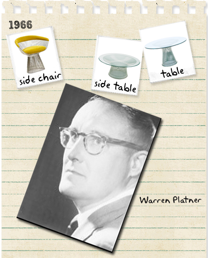

Warren Platner

Warren Platner (born 1919, Baltimore, United States) was an American architect and interior designer.
Platner produced a furniture collection that has proved to be a continuing icon of 1960s Modernism. He is also famed with designing several prominent interiors in New York City, including headquarter offices for the Ford Foundation building and the original Windows on the World restaurant, atop the World Trade Center.
Furniture design
Platner was a part of Eero Saarinen’s office from 1960 to 1965, participating in the designs for the Dulles International Airport in Washington, D.C., the Repertory Theatre at Lincoln Center and several dormitories at Yale University.
Working in the firms of Eero Saarinen and Kevin Roche in the early and mid-1960s, Platner unveiled his seminal collection of chairs, ottomans and tables in 1966. Produced by Knoll International, with the aid of a grant from the Graham Foundation, each piece rested on a sculptural base of nickel-plated steel rods resembling a “shiny sheaf of wheat”, according to the Knoll catalogue.
Production was complicated. The sculptural bases were made of hundreds of rods, and for some chairs, required more than 1,000 welds. An intricate cylindrical mesh steel base, creating a unique architectural play between the interior and exterior space, supported the upholstered seat.
The collection has been in continuous production since its introduction, highlighting the ever-growing interest by collectors of mid-century modern design.
Platner outlined the definition of a ‘classic’ as being, “something that every time you look at it, you accept it as it is and you see no way of improving it”.
Interior design
As the head of interior design at Kevin Roche’s firm, Platner created office spaces that were flexible, understated and efficient. He chose a rich, quiet colour scheme to create a warm environment and installed custom-made furniture designed to eliminate needless effort. Ergonomic desks included built-in telephones and special compartments for files and office machines.
Platner was a firm believer that a building’s design should come from within: “I try to conceive of what would be the best atmosphere, the best character [for a particular building].”
After extensive exposure to many innovative, modern designers of the period, and having gathered a great deal of experience, Platner opened his own office, Warren Platner Associates, in Connecticut in 1965, while continuing to work on the Ford Foundation headquarters building, at 320 East 43rd Street, near Second Avenue in Manhattan. Designed by Kevin Roche and opened in 1967, its steel, granite and glass construction, with its soaring central garden, epitomised the confident, optimistic outlook of the Great Society, a set of US domestic programs promoted by President Lyndon B. Johnson and fellow Democrats in the United States Congress in the 1960s.
Platner’s firm was composed purely of fully qualified architects, whom he believed could manage any design task, whether it was interior planning or the architecture of a skyscraper: “Architects can do any design task, if they wish to do so.”
One of Platner’s first solo projects was the New York showroom for Georg Jensen, the high-end seller of Scandinavian furniture and lighting, called the Georg Jensen Design Centre. It opened in 1968.
Platner’s design for Windows on the World, a restaurant atop the World Trade Center, which originally opened in 1976, is well known. Mimicking the interior of a grand ocean liner, the main dining room was elaborately terraced to provide views for every table, intimate seating and a sense of drama. Paul Goldberger, architecture critic of The New York Times at the time, described the restaurant’s lush interior, with its soft pastels, fabric-covered walls and what seemed like miles of brass railings, as an example of “sensuous modernism”.
Platner, who also created lighting fixtures, floor and window coverings, furniture and architectural ornaments for clients, completed many other noteworthy projects, including the interior design of Water Tower Place, the vertical shopping mall that opened in Chicago in 1976, and the 1986 renovation of the Pan Am Building lobby for its new owner, MetLife.
Warren Platner was inducted into Interior Design magazine’s hall of fame in 1985.
Until falling ill, Platner was still active in his firm, Warren Platner Associates, working on projects, including a new shopping centre in Greece. He died, aged 86, in 2006.